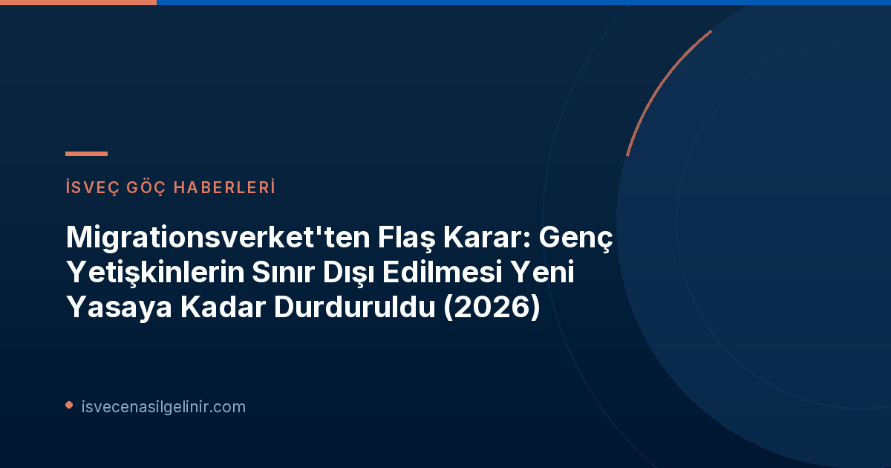

İsveç Göçmen Dairesi'nden Genç Yetişkinler İçin Önemli Karar: Sınır Dışı Ertelemesi Geliyor
İsveç Göçmen Dairesi (Migrationsverket), beklenen yeni "sınır dışı durdurma yasası"nın yürürlüğe girmesini beklerken, bazı genç yetişkinlerin sınır dışı edilme kararlarının uygulanmasını geçici olarak durdurma kararı aldı. Bu karar, Sosyal Sigortalar Komitesi'ndeki partilerin çoğunluğunun desteklediği bir yasa tasarısı doğrultusunda alındı. Migrationsverket Genel Direktörü Maria Mindhammar, kararın istisnai bir durum olduğunu vurguladı: "Bu, istisnai bir durumdur ve yasa değişiklikleri öncesinde genel olarak yapmamız beklenen veya gelecekteki olası yasa değişiklikleri öncesinde tekrarlamayı düşündüğümüz bir uygulama değildir." Bu açıklama, kararın sadece mevcut özel koşullar altında alındığını ve bir emsal teşkil etmeyeceğini gösteriyor.Kimler Bu Geçici Ertelemeden Yararlanabilecek?
Bu geçici uygulama, aşağıdaki koşulları sağlayan genç yetişkinleri kapsamaktadır:| Koşul | Detay |
|---|---|
| Yaş | 18 yaşını doldurmuş olmak. |
| Geçmiş İkamet | Küçük yaşta aileleriyle birlikte İsveç'te ikamet izniyle bulunmuş olmak. |
| Ret Kararı Tarihi | 20 Temmuz 2021 veya sonrasında oturum izni başvurularına ret kararı almış olmak. |
| Migrationsverket ile İlişki | Ret kararından sonra Migrationsverket'ten bilinçli olarak saklanmamış olmak. |
| İsveç ile Bağlantı | İsveç'te ebeveynleri, kardeşleri veya ebeveynlerinin yerine geçmiş kişilerle hâlâ devam eden bir bağı olmak ve küçük yaşta bu kişilerle aynı hanede yaşamış olmak. (Bu aile üyeleri, İsveç'te ikamet izniyle veya benzeri bir statüyle bulunmalı ya da İsveç veya İskandinav vatandaşı olmalıdır.) |
Kimler Kapsam Dışı Kalıyor?
Bu erteleme kararının dışında kalan durumlar da açıkça belirtilmiştir:Kapsam Dışı Kalma Durumları
- Güvenlik Davaları: Yabancılar Yasası'nın (utlänningslagen) 1. bölüm, 7. paragrafına göre güvenlik davaları kapsamında olan kişiler.
- Suçtan Kaynaklı Sınır Dışı: Yabancılar Yasası'nın 8 a. bölümüne göre suç nedeniyle sınır dışı edilmiş kişiler.
- Kamu Düzenine Tehdit veya Kötü Davranış: Kamu düzeni veya güvenliği için tehdit oluşturan, bir suçtan hüküm giymiş veya genel ahlaki tutum (vandel) açısından eksiklikleri olan kişiler (Yabancılar Yasası'nın 5. bölüm, 17. paragraf, ilk fıkra).
Kararın Detayları ve Hukuki Temeli
Migrationsverket'in bu yeni kararı, başvuruların değerlendirilmesi ve kararların mevcut yasalara göre alınmaya devam edeceği anlamına gelmektedir. Ancak, bu kararların *uygulanması*, yani ilgili kişilerin zorla ülkeden çıkarılması, geçici olarak durdurulmuştur. Karar kapsamında olan hiçbir birey, bu durdurma yürürlükte kaldığı sürece ülkeyi terk etmeye zorlanmayacaktır. Bu durdurma, Yabancılar Yasası (utlänningslagen 2005:716) 12. bölüm, 13. paragrafı uyarınca "uygulamanın askıya alınması" (inhibition) olarak adlandırılan bir hukuki tedbir niteliğindedir. Karar geçicidir ve en geç 30 Kasım 2027 tarihine kadar geçerli olacaktır. Migrationsverket, özellikle hükümet kurma süreci ve yasama çalışmalarındaki olası gecikmeler gibi faktörleri göz önünde bulundurarak, kararın devam edip etmeyeceğini sürekli olarak değerlendirecektir. Yeni yasal düzenlemenin en geç 2027 sonbaharında yürürlüğe girmesi planlanmaktadır. Genel Direktör Maria Mindhammar, uzun vadede sürdürülebilir bir çözümün önemine dikkat çekerek, yasa değişikliklerinin birleşik etkilerinin sonradan özel çözümlere ihtiyaç doğurduğunu belirtmiştir. Amaç, bireylerin öngörülebilir ve hukuki güvenliği olan bir sistemle karşılaşmasını sağlamaktır.Neden Böyle Bir Karar Alındı? Daha Önce Örneği Var mıydı?
Migrationsverket'in bu tür istisnai bir karar almasının temel nedeni, yasama sürecinde olan yeni bir kanun tasarısının, mevcut yasalara göre sınır dışı edilmesi gereken genç yetişkinleri etkileyecek olmasıdır. Amaç, bireylerin değişmek üzere olan kurallara göre sınır dışı edilmesini önlemektir. Bu tür bir geçici durdurma uygulamasına daha önce de rastlanmıştır. Migrationsverket, 18 ila 21 yaş arasındaki gençleri ilgilendiren 1 Ekim yasası değişikliği öncesinde de benzer bir geçici durdurma uygulayarak, değişmekte olan kurallara göre bireylerin sınır dışı edilmesini engellemiştir. Normalde, bir kurumun yeni bir yasa yürürlüğe girene kadar mevcut yasaları uygulaması ve kesinleşmiş kararları yerine getirmesi temel ilkedir. Ancak, mevcut durumun özel koşulları, bu istisnai adımı gerekli kılmıştır.Geleceğe Yönelik Beklentiler: Yeni Yasa Ne Getirecek?
Planlanan yeni yasal düzenlemenin en geç 2027 sonbaharında yürürlüğe girmesi beklenmektedir. Bu yeni yasanın, özellikle çocuk yaşta İsveç'e gelmiş ve yetişkinliğe adım atmış gençlerin durumuna ilişkin daha öngörülebilir ve sürdürülebilir çözümler sunması hedeflenmektedir. Migrationsverket ve diğer ilgili kurumlar için de görevlerini planlama ve uygulama açısından daha net çerçeveler sağlaması amaçlanmaktadır. Uzun vadede, bu tür "sonradan düzeltme" ihtiyaçlarını ortadan kaldırarak daha istikrarlı bir göç ve vatandaşlık sistemi oluşturulması amaçlanmaktadır. Referanslar: Migrationsverket Resmi Duyurusu (25 Kasım 2026)İsveç'teki Göçmenlik ve Vatandaşlık Süreçleri Hakkında Merak Ettikleriniz mi Var?
İsveç'te yaşamak, çalışmak veya vatandaşlık almak gibi konularda güncel ve doğru bilgilere ulaşmak için rehberlerimizi inceleyin. Hukuki süreçler ve gerekli adımlar hakkında detaylı bilgilere anında erişin.